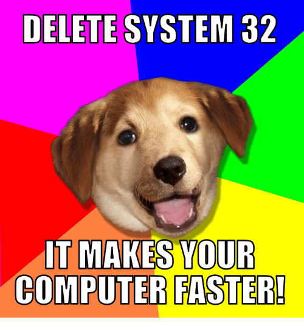

🎨 Curiosidades da Internet Retrô
Coisas que só quem viveu sabe:
- 🌈 Sites com fundo preto e texto neon
- 🕺 Gifs de “Under Construction” em todo canto
- 📁 Wallpapers de Matrix e dragões em chamas
- 🧠 Memes como “Badger Badger” e “All Your Base Are Belong To Us”
- 💻 A clássica pegadinha de "Delete System32" que destruía computadores

🧃 Curiosidade: Muitos sites tinham contadores de visitas e tocavam música automaticamente!
🏠 Voltar ao Museu